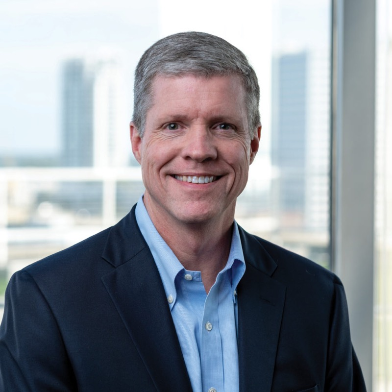

Drew Graham
Managing Partner & Co-Founder
Co-founded Ballast Point Ventures in 2002 after six years at South Atlantic Venture Funds, where he was a Principal and General Partner in Funds III and IV. Began his private-equity career in Morgan Stanley's Merchant Banking Division and as a consultant at the Parthenon Group. Currently Chairman of Theragen; previously Chairman of KBI BioPharma, kSep Holdings, MolecularMD and SleepMed. Also Chairman of the Board of Tampa General Hospital.
Princeton University (Phi Beta Kappa, magna cum laude) · Harvard MBA, with Distinction